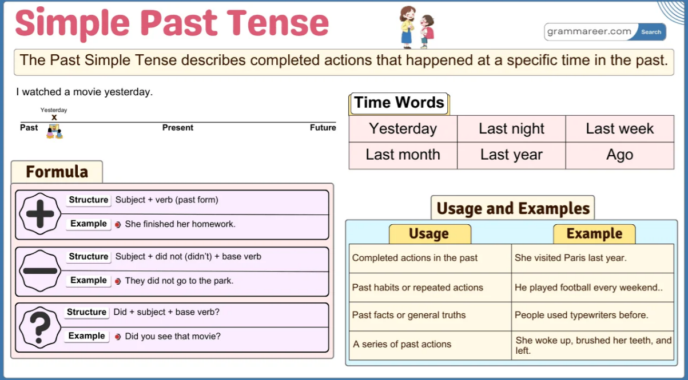

Simple Past Tense

The Simple Past Tense is used to talk about actions or events that happened in the past and are now finished. It helps describe things like “She visited Paris last year” or “They played soccer yesterday.” This tense is common when sharing stories, talking about past experiences, or describing historical events. Recognizing how to form and use the Simple Past Tense correctly makes it easier to communicate about things that have already happened, whether recently or long ago.
Sentence Structures of the Simple Past Tense
The Simple Past Tense has three main structures: affirmative, negative, and interrogative sentences.
Affirmative Sentences
Structure: Subject + Past Form of the Verb + Object
Examples:
- Aisha visited Turkey last year.
- They played football yesterday.
In the first example, visited is the past form of “visit.” In the second, played is the past form of “play.”
Negative Sentences
Structure: Subject + did not + Base Form of the Verb + Object
Examples:
- Bilal did not watch TV last night.
- We did not eat lunch at school.
The word did not (or didn’t) is used with the base form of the verb, regardless of the subject.
Interrogative Sentences
Structure: Did + Subject + Base Form of the Verb + Object + ?
Examples:
- Did Hamza play chess?
- Did they go to the market?
For all subjects, did is used, followed by the base form of the verb.
Double Interrogative Sentences
Structure: Question Word + Did + Subject + Base Form of the Verb + Object + ?
Examples:
- What did Fatima study at school?
- Where did they travel last summer?
Here, question words like what, where, who, why, when are placed at the beginning.
Simple Past vs. Present Perfect Tense
The Simple Past Tense shows completed actions at a specific past time, while the Present Perfect Tense highlights actions with present relevance or unspecified past timing. Understanding their differences helps in expressing past events accurately.
| Feature | Simple Past Tense | Present Perfect Tense |
|---|---|---|
| Usage | Completed action at a specific time in the past. | Action happened at an unspecified time with relevance to the present. |
| Time Ref. | Specific time (yesterday, last year, in 2010). | No specific time (ever, never, just, already, since, for). |
| Example | I visited Paris last year. | I have visited Paris. |
| Formation | verb + -ed (regular) or irregular form (She went). | have/has + past participle (She has gone.) |
| Focus | Focus on when the action happened. | Focus on the result or experience. |
| Signal Words | Yesterday, ago, last week, when. | Ever, never, just, already, since, for. |
| Context | I lost my keys yesterday. (Completed action in the past) | I have lost my keys. (Still relevant now) |
Subject-Verb Agreement in Simple Past
In the Simple Past Tense, the verb form is the same for all subjects. The helping verb did is used in negative and interrogative sentences, while the past form of the main verb is used in affirmative sentences.
| Subject | Affirmative Example | Negative Example | Interrogative Example |
|---|---|---|---|
| I | I went to school. | I did not go to school. | Did I go to school? |
| You | You played football. | You did not play football. | Did you play football? |
| He/She/It | He watched TV. | He did not watch TV. | Did he watch TV? |
| We/They | They visited Lahore. | They did not visit Lahore. | Did they visit Lahore? |
Time Expressions in Simple Past
Certain time expressions are commonly used with the Simple Past Tense:
- Yesterday: She called me yesterday.
- Last year/week/month: We went to Dubai last year.
- Ago: He left the office two hours ago.
- In 2020: They graduated in 2020.
- When I was a child: I lived in Multan when I was a child.
Adverb Placement in Simple Past
Adverbs of time (yesterday, last night, ago) are usually placed at the end of the sentence.
Examples:
- She visited her grandmother last weekend.
- They arrived late yesterday.
Uses of the Simple Past Tense
The Simple Past Tense is used to describe completed actions, past events, habits in the past, and situations that no longer exist. It helps indicate actions that happened at a specific time in the past.
1. Completed Actions in the Past
It describes actions that happened at a specific time in the past, even if the time is not mentioned but understood from context.
- She visited Paris last year.
- They watched a movie yesterday.
2. Series of Completed Actions
It is used to list multiple actions that occurred one after another in the past.
- He woke up, brushed his teeth, and left for work.
- She entered the room, sat down, and started reading.
3. Past Habits or Routines
It describes habits or repeated actions in the past, often with words like always, often, or used to.
- When I was a child, I played outside every day.
- He visited his grandmother every weekend.
4. Situations or States in the Past
It is used to describe conditions, situations, or states that were true in the past but are no longer true.
- She was very shy in school.
- They lived in New York before moving to Chicago.
Short Answers in Simple Past
Short answers in the Simple Past Tense provide brief, clear responses to yes/no questions about past events. They help keep conversations natural without repeating the full sentence.
| Question | Short Answer |
|---|---|
| Did you see this movie? | Yes, I did. |
| Did she complete the task? | No, she didn’t. |
| Did they visit London? | Yes, they did. |
| Did Ahmed study for the exam? | No, he didn’t. |
Question Tags in Simple Past
Question tags in the Simple Past Tense confirm past events or seek agreement, making conversations more interactive and natural.
| Sentence | Question Tag |
|---|---|
| You went to school, didn’t you? | didn’t you? |
| He played football, didn’t he? | didn’t he? |
| They visited Lahore, didn’t they? | didn’t they? |
| She watched the movie, didn’t she? | didn’t she? |
Examples of Simple Past in Use
Here are 12 examples of Simple Past Tense:
- Affirmative:
- Hassan ate breakfast early.
- We lived in Karachi for five years.
- Negative:
- She did not finish her homework.
- They did not attend the meeting.
- Interrogative:
- Did you understand the lesson?
- Did Hina call her friend?
Common Mistakes with Simple Past
Many learners make errors in this tense. Here are some common mistakes and their corrections:
-
✅ She went to the market.
-
❌ She go to the market.
-
✅ They did not eat lunch.
-
❌ They did not ate lunch.
-
✅ Did you see that movie?
-
❌ Did you saw that movie?
-
✅ The baby slept early.
-
❌ The baby sleep early.
Feedback
Was this page helpful?
Glad to hear it! Please tell us how we can improve.
Sorry to hear that. Please tell us how we can improve.